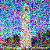
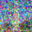

I first experimented by running an existing trained stable diffusion model, DeepFloyd IF. Given a test prompt as input and using a random seed (I used $180$), the model accurately outputs an image that depicts the description. The images start off as white noise, and each step, the objects take form. As num_inference_steps increases, the images become more complex and less noisy.
 num_inference_steps = 1 |
 num_inference_steps = 5 |
|
num_inference_steps = 10 |
 num_inference_steps = 20 |
Part 1.1 Forward process
Diffusion involves taking in a noisy image and denoising it to produce a clean image. This process is difficult, but the reverse–adding noise to a clean image–is very simple. Therefore, the first part of this project is implementing the forward process using the following equation:
$$x_t = \sqrt{\bar{\alpha}_t} x0 + \sqrt{1 - \bar{\alpha}_t} \cdot \epsilon \quad \text{where} \quad \epsilon \sim N(0, 1)$$- $x_0 =$ clean image
- $x_t =$ noisy image at timestep $t$
- $\bar{\alpha}_t =$ noise coefficient
- $\epsilon =$ Gaussian noise
Given the original image $x_0$ and timestep $t \in [0, T]$, the function forward noises the image. The image at $t = 0$ is the original image, while at $t = T$, the image is pure noise. Thus, $\bar{\alpha}_t$ is close to 1 for small $t$ and close to $0$ for large $t$.
 campanile.png |
||
 t = 250 |

t = 250 |
 t = 750 |
Part 1.2 Classical Denoising
In order to recover the original image, one option is to apply Gaussian blur filtering to remove noise. This was done using the function torchvision.transforms.functional.gaussian_blur
|
blurred t = 250 |
 blurred t = 500 |

blurred t = 750 |
Part 1.3 One-Step Denoising
To achieve a better result, a pretrained diffusion model is used. Given a noisy image im_noisy and timestep $t$, the UNet estimates the amount of noise in the image. Then, this noise is removed from im_noisy to produce the estimated clean image.
$$x_t = \sqrt{\bar{\alpha}_t} \cdot x_0 + \sqrt{1 - \bar{\alpha}_t} \cdot \epsilon \quad \text{where} \quad \epsilon \sim N(0, 1)$$ $$x_t - \sqrt{1 - \bar{\alpha}_t} \cdot \epsilon = \sqrt{\bar{\alpha}_t} \cdot x_0$$ $$x_0 = \frac{x_t - \sqrt{1 - \bar{\alpha}_t} \cdot \epsilon}{ \sqrt{\bar{\alpha}_t} }$$Compared to using Gaussian blur filtering, the result is improved. At $t=0$, the output is the most accurate, and the quality decreases with higher $t$, producing a more distorted campanile.
 after one-step denoising t = 250 |
 after one-step denoising t = 500 |
after one-step denoising t = 750 |